Practica 8: Simulink
Contents
integrantes: Gomez Serrano Eric, Vazquez Cruz Rodrigo, Gomez Garcia Carlos Eduardo
Objetivos:
- Conocer Simulink
- Implementar simulaciones de ecuaciones diferenciales en Simulink
Desarrollo:
Problema 1

solucion analitica y grafica de la solucion analitica de la ecuacion a)
syms t
f_t = 2*cos(4*t-(pi/3))*heaviside(t);
laplace2016a([6 5 1],1,[1 0],f_t,10)
APLICAMOS TRANSFORMADA DE LAPLACE y subtituimos condiciones iniciales
2
6 Y(s) - s + 5 s Y(s) + s Y(s) - 5
=
X(s)
SUBSTITUIMOS LA TRANSFORMADA DE LA ENTRADA
2
6 Y(s) - s + 5 s Y(s) + s Y(s) - 5
=
4 sqrt(3) s
--------- + -------
2 2
s + 16 s + 16
DESPEJAMOS Y(s)
Y(s)=
3 2
s + 5 s + 17 s + 4 sqrt(3) + 80
---------------------------------
2 2
(s + 16) (s + 5 s + 6)
DESARROLLAMOS LAS FRACCIONES PARCIALES DE Y(s)
Y(s)=
sqrt(3) 29 4 sqrt(3) 47 2 sqrt(3) / sqrt(3) 1 \ 4
------- + -- --------- + -- --------- + s | ------- + -- | - --
5 10 25 25 25 \ 25 50 / 25
------------ - -------------- - -----------------------------------
s + 2 s + 3 2
s + 16
Aplicamos transformada inversa, asi la solución es
y(t)=
sin(4 t) cos(4 t) sqrt(3) sin(4 t) / sqrt(3) 29 \
-------- - -------- - ---------------- + exp(-2 t) | ------- + -- |
25 50 50 \ 5 10 /
/ 4 sqrt(3) 47 \ sqrt(3) cos(4 t)
- exp(-3 t) | --------- + -- | - ----------------
\ 25 25 / 25
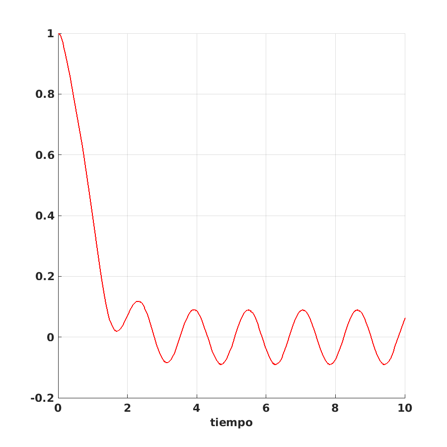 solucion analitica y grafica de la solucion analitca de la ecuacion b)
f_t= heaviside(t); laplace2016a([6 5 1],[0 1],[1 0],f_t,10)
APLICAMOS TRANSFORMADA DE LAPLACE y subtituimos condiciones iniciales
2
6 Y(s) - s + 5 s Y(s) + s Y(s) - 5
=
s X(s)
SUBSTITUIMOS LA TRANSFORMADA DE LA ENTRADA
2
6 Y(s) - s + 5 s Y(s) + s Y(s) - 5
=
1
DESPEJAMOS Y(s)
Y(s)=
s + 6
------------
2
s + 5 s + 6
DESARROLLAMOS LAS FRACCIONES PARCIALES DE Y(s)
Y(s)=
4 3
----- - -----
s + 2 s + 3
Aplicamos transformada inversa, asi la solución es
y(t)=
exp(-2 t) 4 - exp(-3 t) 3
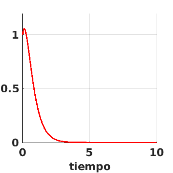 para la ecuacion a)
Diagrama de simulink
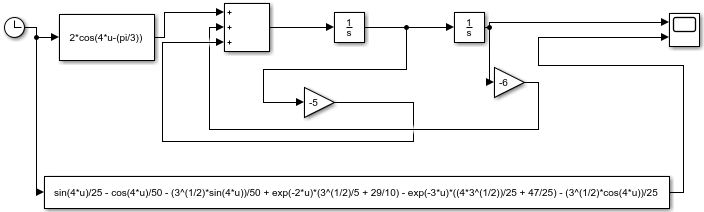
grafica de solucion de simulink
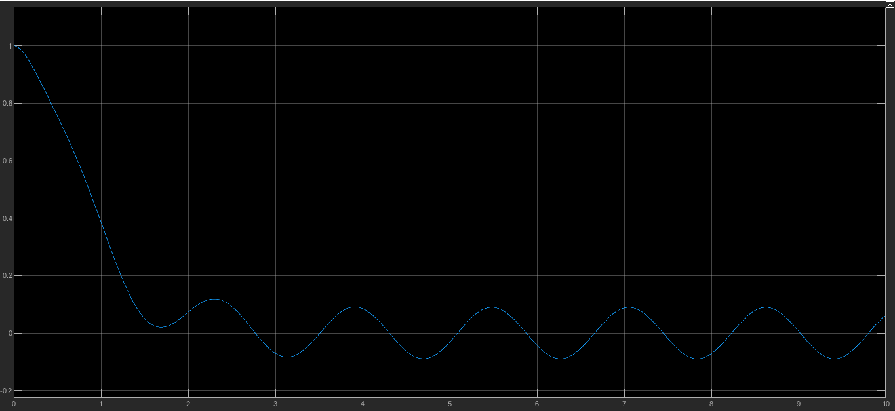
para la ecuacion b)
Diagrama de simulink
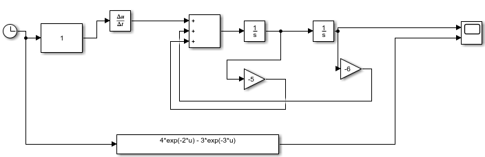
grafica de solucion de simulink
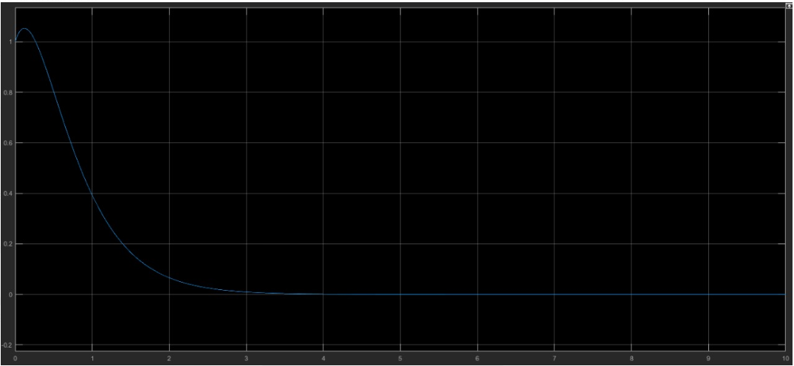
Inciso f i)
ftransferencia([6 5 1],1)
Funcion de Transferencia
H(s)=
1
------------
2
s + 5 s + 6
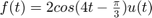
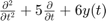
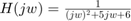
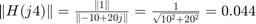
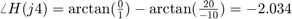
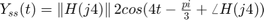
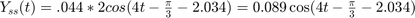
t= (0:1e-3:10); Yss = 0.089*cos(4*t-(pi/3)-2.034).*heaviside(t); plot(t,Yss,'linewidth',2,'color','r') grid on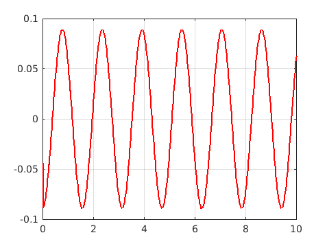
Inciso f ii)
w = (0:0.1:10); absH= @(w) 1./((6-w.^2).^2+(5*w).^2).^0.5; angH= @(w) atan2d(0,1)-atan2d(5*w,(6-w.^2)); subplot(121) plot(w,absH(w)) grid on title('|H(j\omega)|') xlabel('\omega') subplot(122) plot(w,angH(w)) grid on title('\angle H(j\omega)') xlabel('\omega')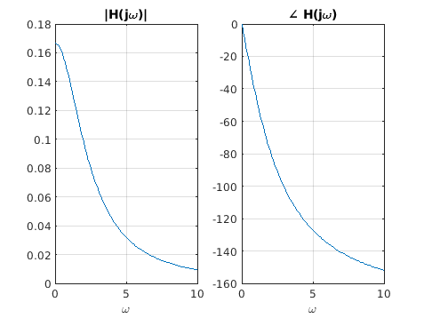
Inciso f iii)
subplot(121) plot(w,absH(w)) hold on p2= plot(4,absH(4),'ro'); legend(p2,'Escalamiento para w=4') grid on title('|H(j\omega)|') xlabel('\omega') subplot(122) plot(w,angH(w)) hold on p3= plot(4,angH(4),'ro'); legend(p3,'Traslacion en grados para w=4') grid on title('\angle H(j\omega)') xlabel('\omega')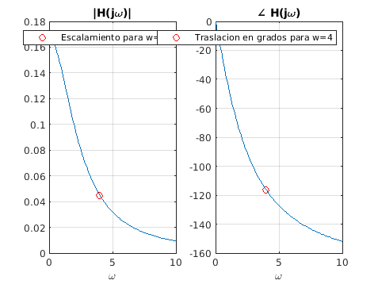
Problema 2
Un péndulo doble oscila en un plano vertical bajo la acción de la gravedad. Para desplazamientos pequeños 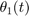 y 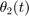, es posible demostrar que las ecuaciones diferenciales del movimiento son
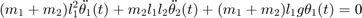
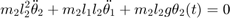
donde 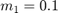, 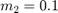, 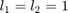, 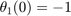, 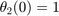, 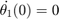 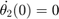.
a)Realiza la solución símbolica como en el siguiente documento
y gráfica las soluciones , se utilizo como referencia el siguiente <https://www.mathworks.com/help/symbolic/solve-differential-equations-using-laplace-transform.html codigo>
% Resolver ecuacion diferencial % clear all; close all; clc % Variables simbolicas syms theta1(t) theta2(t) s m1 = 0.1; m2 = 0.1; l1 = 1; l2 = 2; g =9.8; assume(t > 0) % Para obtener las diferenciales dtheta1 = diff(theta1, t); % Primera derivada de theta1 ddtheta1 = diff(theta1,t, 2); % Segunda derivada de theta1 dtheta2 = diff(theta2, t); % Primera dervidad de theta ddtheta2 = diff(theta2,t, 2); % Segunda dervida de theta1 % Para las ecuaciones % eqn1 = (m1 + m2)*(l1^2)*ddtheta1 + m2*l1*l2*ddtheta2 + (m1 + m2)*l1*g*theta1 == 0 % eqn2 = m2*(l2^2)*ddtheta2 + m2*l1*l2*ddtheta1 + m2*l2*g*theta2 == 0 eqn1 = 4*ddtheta1 + ddtheta2 + 8*theta1 == 0; eqn2 = ddtheta1 + ddtheta2 + 2*theta2 == 0; cond1 = theta1(0) == -1; cond2 = theta2(0) == 1; cond3 = dtheta1(0) == 0; cond4 = dtheta2(0) == 0; % Laplace eqn1LT = laplace(eqn1,t,s); eqn2LT = laplace(eqn2,t,s); % Necesitamos hacer una sustitucion syms theta1_LT theta2_LT eqn1LT = subs(eqn1LT,[laplace(theta1(t), t, s) laplace(theta2(t), t, s)],[theta1_LT theta2_LT]); eqn2LT = subs(eqn2LT,[laplace(theta1(t), t, s) laplace(theta2(t), t, s)],[theta1_LT theta2_LT]); % Resolvemos la ecuación eqns = [eqn1LT eqn2LT]; vars = [theta1_LT theta2_LT]; [theta1_LT, theta2_LT] = solve(eqns,vars); % Una vez resuelta la ecuacion, calculamos la transformada inversa de % Laplace theta1sol = ilaplace(theta1_LT,s,t); theta2sol = ilaplace(theta2_LT,s,t); % Simplificamos la solución theta1sol = simplify(theta1sol); theta2sol = simplify(theta2sol); % Ultimas sustituciones vars = [theta1(0) theta2(0) dtheta1(0) dtheta2(0)]; values = [-1 1 0 0]; theta1sol = subs(theta1sol,vars,values) theta2sol = subs(theta2sol,vars,values) % Para gráficar (en esta parte se utilizo la referencia citada anteriormente) subplot(2,2,1) fplot(theta1sol) title('\theta_1') ylabel('I1(t)') xlabel('t') subplot(2,2,2) fplot(theta2sol,[0 10]) title('\theta_2') ylabel('Q(t)') xlabel('t') subplot(2,2,3) fplot(theta1sol,[5 25]) title('\theta_1') ylabel('I1(t)') xlabel('t') subplot(2,2,4) fplot(theta2sol,[5 25]) title('\theta_2') ylabel('Q(t)') xlabel('t')
theta1sol = - (3*cos(2*t))/4 - cos((2*3^(1/2)*t)/3)/4 theta2sol = (3*cos(2*t))/2 - cos((2*3^(1/2)*t)/3)/2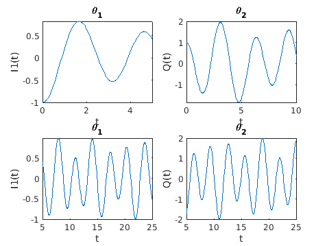
Problema 3
Simulink utiliza una técnica conocida como detección de cruce por cero para localizar con precisión una discontinuidad sin recurrir a pasos de tiempo excesivamente pequeños. Por lo general, esta técnica mejora el tiempo de ejecución de la simulación, pero puede hacer que algunas simulaciones se detengan antes del tiempo de finalización previsto. Este ejemplo muestra cómo funcionan los cruces por cero en Simulink. En este modelo, tres ondas sinusoidales desplazadas se introducen en un bloque de valor absoluto y un bloque de saturación. En exactamente t = 5, la salida del bloque de conmutación cambia del valor absoluto al bloque de saturación. Los cruces por cero en Simulink detectarán automáticamente exactamente cuándo el bloque del interruptor cambia su salida, y el solucionador pasará a la hora exacta en que ocurre el evento.
Esquema de simulink
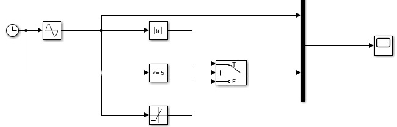
Grafica de simulink
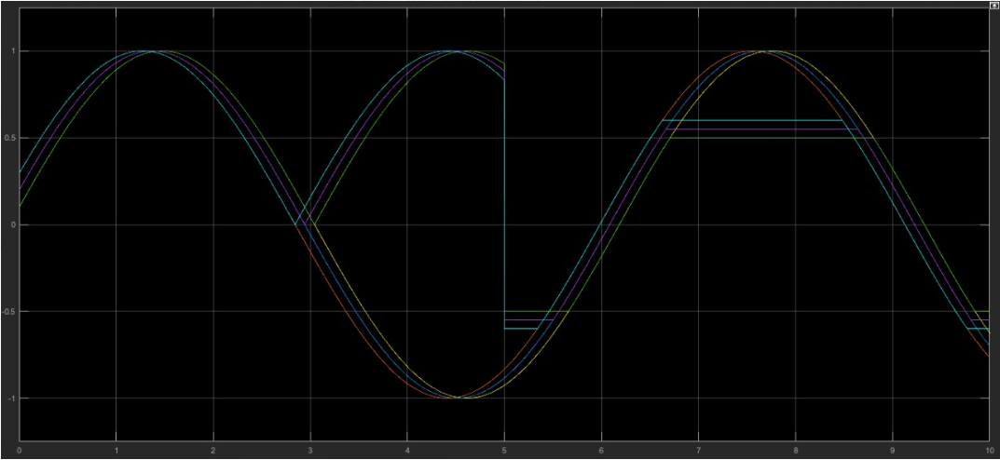